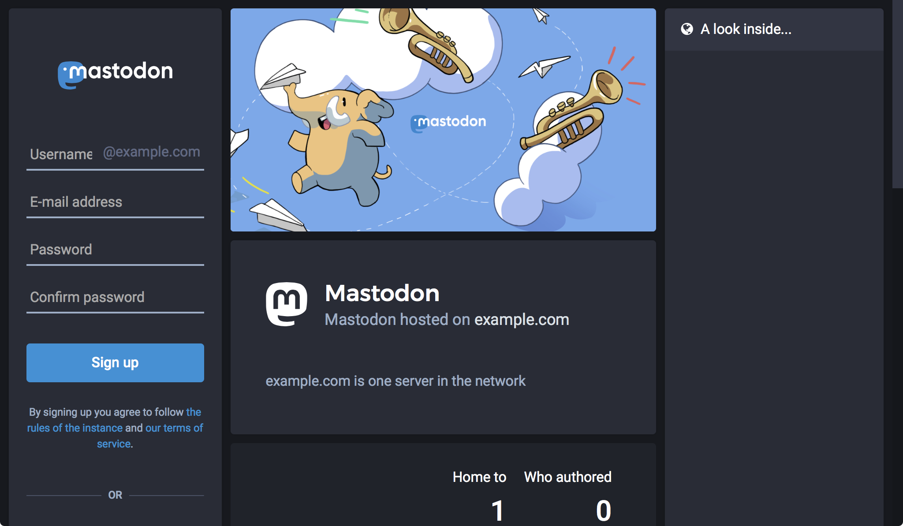
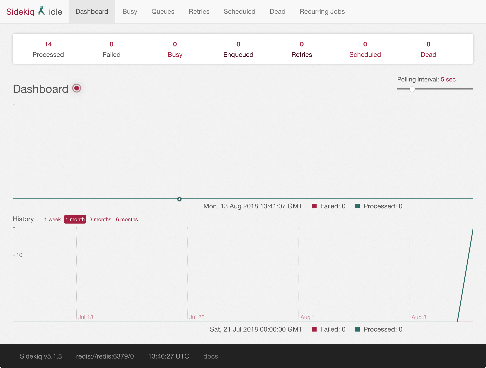

How to Install Mastodon on Ubuntu 16.04
Updated by Linode Written by Linode
What is Mastodon?
Mastodon is a free, decentralized, and open source social network alternative to Twitter. Like Twitter, Mastodon users can follow other users and post messages, images, and videos. Unlike Twitter, there is no single central authority and store for content on the network.
Instead, anyone can create a Mastodon server, invite friends to join it, and build their own communities. In addition, while each Mastodon instance is privately operated, users from different servers can still communicate with and follow each other across instances.
The Fediverse
The grouping of all the independent social network servers is referred to as the Fediverse. Mastodon can communicate with any server implementing the ActivityPub and/or OStatus protocols (one other example is GNU Social), and Mastodon is just one implementation of these protocols.
While Mastodon servers are privately-operated, they are often open to public registration. Some servers are small, and some are very large (for example, Mastodon.social has over 180,000 users). Servers are frequently centered on specific interests of their users, or by the principles those users have defined. To enforce those principles, each Mastodon server has the power to moderate and set rules for the content created by the users on that server (for example, see Mastodon.social’s Code of Conduct).
Before You Begin
This guide will create a Mastodon server on a Linode running Ubuntu 16.04. Docker Compose is used to install Mastodon. If you prefer a different Linux distribution, you may be able to use this guide with small changes to the listed commands.
Familiarize yourself with Linode’s Getting Started guide and complete the steps for deploying and setting up a Linode, including setting the hostname and timezone.
Note
Consult Mastodon’s resource usage examples when considering which Linode plan to deploy on.This guide uses sudo wherever possible. Complete the sections of our Securing Your Server guide to create a standard user account, harden SSH access and remove unnecessary network services.
Replace each instance of
example.comin this guide with your Mastodon site’s domain name.Complete the Add DNS Records steps to register a domain name that will point to your Mastodon Linode.
Ensure your system is up to date:
sudo apt update && sudo apt upgradeMastodon will serve its content over HTTPS, so you will need to obtain an SSL/TLS certificate. Request and download a free certificate from Let’s Encrypt using Certbot:
sudo apt install software-properties-common sudo add-apt-repository ppa:certbot/certbot sudo apt update sudo apt install certbot sudo certbot certonly --standalone -d example.comThese commands will download a certificate to
/etc/letsencrypt/live/example.com/on your Linode. Why not use the Docker Certbot image?
When Certbot is run, you generally pass a command with the
Why not use the Docker Certbot image?
When Certbot is run, you generally pass a command with the--deploy-hookoption which reloads your web server. In your deployment, the web server will run in its own container, and the Certbot container would not be able to directly reload it. Another workaround would be needed to enable this architecture.Mastodon sends email notifications to users for different events, like when a user first signs up, or when someone else requests to follow them. You will need to supply an SMTP server which will be used to send these messages.
One option is to install your own mail server using the Email with Postfix, Dovecot, and MySQL guide. You can install such a mail server on the same Linode as your Mastodon server, or on a different one. If you follow this guide, be sure to create a
notifications@example.comemail address which you will later use for notifications. If you install your mail server on the same Linode as your Mastodon deployment, you can use your Let’s Encrypt certificate in/etc/letsencrypt/live/example.com/for the mail server too.If you would rather not self-host an email server, you can use a third-party SMTP service. The instructions in this guide will also include settings for using Mailgun as your SMTP provider.
This guide uses Mastodon’s Docker Compose deployment method. Before proceeding, install Docker and Docker Compose. If you haven’t used Docker before, it’s recommended that you review the Introduction to Docker and How to Use Docker Compose guides.
Install Docker
These steps install Docker Community Edition (CE) using the official Ubuntu repositories. To install on another distribution, see the official installation page.
Remove any older installations of Docker that may be on your system:
sudo apt remove docker docker-engine docker.ioMake sure you have the necessary packages to allow the use of Docker’s repository:
sudo apt install apt-transport-https ca-certificates curl software-properties-commonAdd Docker’s GPG key:
curl -fsSL https://download.docker.com/linux/ubuntu/gpg | sudo apt-key add -Verify the fingerprint of the GPG key:
sudo apt-key fingerprint 0EBFCD88You should see output similar to the following:
pub 4096R/0EBFCD88 2017-02-22 Key fingerprint = 9DC8 5822 9FC7 DD38 854A E2D8 8D81 803C 0EBF CD88 uid Docker Release (CE deb)Add the
stableDocker repository:sudo add-apt-repository "deb [arch=amd64] https://download.docker.com/linux/ubuntu $(lsb_release -cs) stable"Update your package index and install Docker CE:
sudo apt update sudo apt install docker-ceAdd your limited Linux user account to the
dockergroup:sudo usermod -aG docker $USERNote
After entering theusermodcommand, you will need to close your SSH session and open a new one for this change to take effect.Check that the installation was successful by running the built-in “Hello World” program:
docker run hello-world
Install Docker Compose
Download the latest version of Docker Compose. Check the releases page and replace
1.21.2in the command below with the version tagged as Latest release:sudo curl -L https://github.com/docker/compose/releases/download/1.21.2/docker-compose-`uname -s`-`uname -m` -o /usr/local/bin/docker-composeSet file permissions:
sudo chmod +x /usr/local/bin/docker-compose
Set Up Mastodon
Mastodon has a number of components: PostgreSQL and Redis are used to store data, and three different Ruby on Rails services are used to power the web application. These are all combined in a Docker Compose file that Mastodon provides.
Download Mastodon and Configure Docker Compose
SSH into your Linode and clone Mastodon’s Git repository:
cd ~/ git clone https://github.com/tootsuite/mastodon cd mastodonThe Git repository includes an example
docker-compose.ymlwhich needs some updates to be used in your deployment. The first update you will make is to specify a release of the Mastodon Docker image. The Mastodon GitHub page maintains a chronological list of releases, and you should generally choose the latest version available.Open
docker-compose.ymlin your favorite text editor, comment-out thebuildlines, and add a version number to theimagelines for theweb,streaming, andsidekiqservices:- docker-compose.yml
-
1 2 3 4 5 6 7 8 9 10 11 12 13 14 15 16 17 18 19version: '3' services: # [...] web: # build: . image: tootsuite/mastodon:v2.4.2 # [...] streaming: # build: . image: tootsuite/mastodon:v2.4.2 # [...] sidekiq: # build: . image: tootsuite/mastodon:v2.4.2 # [...]
Note
This guide uses Mastodon v2.4.2. At the time of writing, there was a known issue with v2.4.3 during installation.For the
db,redis,web, andsidekiqservices, set the volumes listed in this snippet:- docker-compose.yml
-
1 2 3 4 5 6 7 8 9 10 11 12 13 14 15 16 17 18 19 20 21 22 23 24 25version: '3' services: db: # [...] volumes: - ./postgres:/var/lib/postgresql/data redis: # [...] volumes: - ./redis:/data web: # [...] volumes: - ./public/system:/mastodon/public/system - ./public/assets:/mastodon/public/assets - ./public/packs:/mastodon/public/packs sidekiq: # [...] volumes: - ./public/system:/mastodon/public/system - ./public/packs:/mastodon/public/packs
After the
sidekiqservice and before the finalnetworkssection, add a newnginxservice. NGINX will be used to proxy requests on HTTP and HTTPS to the Mastodon Ruby on Rails application:- docker-compose.yml
-
1 2 3 4 5 6 7 8 9 10 11 12 13 14 15 16 17 18 19 20 21 22 23 24 25 26 27 28 29 30version: '3' services: # [...] sidekiq: # [...] nginx: build: context: ./nginx dockerfile: Dockerfile ports: - "80:80" - "443:443" volumes: - /etc/letsencrypt/:/etc/letsencrypt/ - ./public/:/home/mastodon/live/public - /usr/share/nginx/html:/usr/share/nginx/html restart: always depends_on: - web - streaming networks: - external_network - internal_network networks: # [...] st
Compare your edited
docker-compose.ymlwith this copy of the complete file and make sure all the necessary changes were included.Create a new
nginxdirectory within the Mastodon Git repository:mkdir nginxCreate a file named
Dockerfilein thenginxdirectory and paste in the following contents:- nginx/Dockerfile
-
1 2 3FROM nginx:latest COPY default.conf /etc/nginx/conf.d
Create a file named
default.confin thenginxdirectory and paste in the following contents. Change each instance ofexample.com:- nginx/default.conf
-
1 2 3 4 5 6 7 8 9 10 11 12 13 14 15 16 17 18 19 20 21 22 23 24 25 26 27 28 29 30 31 32 33 34 35 36 37 38 39 40 41 42 43 44 45 46 47 48 49 50 51 52 53 54 55 56 57 58 59 60 61 62 63 64 65 66 67 68 69 70 71 72 73 74 75 76 77 78 79 80 81 82 83 84 85 86 87 88 89 90map $http_upgrade $connection_upgrade { default upgrade; '' close; } server { listen 80; listen [::]:80; server_name example.com; # Useful for Let's Encrypt location /.well-known/acme-challenge/ { root /usr/share/nginx/html; allow all; } location / { return 301 https://$host$request_uri; } } server { listen 443 ssl http2; listen [::]:443 ssl http2; server_name example.com; ssl_protocols TLSv1.2; ssl_ciphers HIGH:!MEDIUM:!LOW:!aNULL:!NULL:!SHA; ssl_prefer_server_ciphers on; ssl_session_cache shared:SSL:10m; ssl_certificate /etc/letsencrypt/live/example.com/fullchain.pem; ssl_certificate_key /etc/letsencrypt/live/example.com/privkey.pem; keepalive_timeout 70; sendfile on; client_max_body_size 0; root /home/mastodon/live/public; gzip on; gzip_disable "msie6"; gzip_vary on; gzip_proxied any; gzip_comp_level 6; gzip_buffers 16 8k; gzip_http_version 1.1; gzip_types text/plain text/css application/json application/javascript text/xml application/xml application/xml+rss text/javascript; add_header Strict-Transport-Security "max-age=31536000"; location / { try_files $uri @proxy; } location ~ ^/(packs|system/media_attachments/files|system/accounts/avatars) { add_header Cache-Control "public, max-age=31536000, immutable"; try_files $uri @proxy; } location @proxy { proxy_set_header Host $host; proxy_set_header X-Real-IP $remote_addr; proxy_set_header X-Forwarded-For $proxy_add_x_forwarded_for; proxy_set_header X-Forwarded-Proto https; proxy_set_header Proxy ""; proxy_pass_header Server; proxy_pass http://web:3000; proxy_buffering off; proxy_redirect off; proxy_http_version 1.1; proxy_set_header Upgrade $http_upgrade; proxy_set_header Connection $connection_upgrade; tcp_nodelay on; } location /api/v1/streaming { proxy_set_header Host $host; proxy_set_header X-Real-IP $remote_addr; proxy_set_header X-Forwarded-For $proxy_add_x_forwarded_for; proxy_set_header X-Forwarded-Proto https; proxy_set_header Proxy ""; proxy_pass http://streaming:4000; proxy_buffering off; proxy_redirect off; proxy_http_version 1.1; proxy_set_header Upgrade $http_upgrade; proxy_set_header Connection $connection_upgrade; tcp_nodelay on; } error_page 500 501 502 503 504 /500.html; }
Configure Mastodon
The configuration settings for Mastodon are held in the .env.production file at the root of the Mastodon Git repository.
Create the
.env.productionfile and copy in the following contents. Replace all instances ofexample.comwith your domain name. Fill in theSMTP_SERVERandSMTP_PASSWORDfields with the domain and credentials from your mail server:- .env.production
-
1 2 3 4 5 6 7 8 9 10 11 12 13 14 15 16 17 18 19 20 21 22 23 24 25 26 27LOCAL_DOMAIN=example.com SINGLE_USER_MODE=false SECRET_KEY_BASE= OTP_SECRET= VAPID_PRIVATE_KEY= VAPID_PUBLIC_KEY= # Database settings DB_HOST=db DB_PORT=5432 DB_NAME=postgres DB_USER=postgres DB_PASS= # Redis settings REDIS_HOST=redis REDIS_PORT=6379 REDIS_PASSWORD= # Mail settings SMTP_SERVER=your_smtp_server_domain_name SMTP_PORT=587 SMTP_LOGIN=notifications@example.com SMTP_PASSWORD=your_smtp_password SMTP_AUTH_METHOD=plain SMTP_OPENSSL_VERIFY_MODE=none SMTP_FROM_ADDRESS=Mastodon <notifications@example.com>
If you’re using Mailgun for your mail service, remove all the lines from the
Mail settingssection and enter the following options:- .env.production
-
1 2 3 4SMTP_SERVER=smtp.mailgun.org SMTP_PORT=587 SMTP_LOGIN=your_mailgun_email SMTP_PASSWORD=your_mailgun_email_password
Use Docker and Mastodon to generate a new value for the
SECRET_KEY_BASEsetting:SECRET_KEY_BASE=$(docker-compose run --rm web bundle exec rake secret)This creates a string of random characters. If you encounter an error in the next step, run the command again to generate another string.
Insert the
SECRET_KEY_BASEsetting into.env.productionusing thesedcommand:sed -i -e "s/SECRET_KEY_BASE=/&${SECRET_KEY_BASE}/" .env.productionCombine the previous two actions into one step to set a value for the
OTP_SECRETsetting in.env.production:sed -i "s/OTP_SECRET=$/&$(docker-compose run --rm web bundle exec rake secret)/" .env.productionGenerate values for
VAPID_PRIVATE_KEYandVAPID_PUBLIC_KEYsettings:docker-compose run --rm web bundle exec rake mastodon:webpush:generate_vapid_keyCopy the output from the previous command, open
.env.productionin your text editor, and paste the command output into the two lines forVAPID_PRIVATE_KEYandVAPID_PUBLIC_KEY.Build the Docker Compose file:
docker-compose build
Complete the Mastodon Setup
Set Mastodon as the owner of the
publicdirectory inside the Mastodon Git repository:sudo chown -R 991:991 publicNote
The UID that Mastodon will run under is991, but there is nomastodonuser created on your system.Create a directory which will hold Let’s Encrypt challenge files for future certificate renewals:
sudo mkdir -p /usr/share/nginx/htmlSet up the database:
docker-compose run --rm web bundle exec rake db:migratePre-compile Mastodon’s assets:
docker-compose run --rm web bundle exec rake assets:precompileThis command will take a while to complete.
Start Mastodon:
docker-compose up -d
Create your Mastodon User
Visit your domain in a web browser:

Enter a new username, email address, and password to create a new user on your Mastodon instance. When communicating with users of other Mastodon servers, your full username is
@your_username@example.com.Mastodon will attempt to send you a confirmation email. Check your email and click the provided link to confirm your registration.
If you did not set up email notifications, you can manually confirm the new user by running the
confirm_emailtask on the Docker container:docker-compose run web bundle exec rake mastodon:confirm_email USER_EMAIL=your_email_addressRun the
make_admintask on your Docker container to make this new user an admin for the Mastodon instance:docker-compose run web bundle exec rake mastodon:make_admin USERNAME=your_mastodon_instance_user
Troubleshooting
If your Mastodon site doesn’t load in your browser, try reviewing the logs generated by Docker for more information. To see these errors:
Shut down your containers:
cd mastodon docker-compose downRun Docker Compose in an attached state so that you can view the logs generated by each container:
docker-compose upTo shut down Docker Compose and return to the command prompt again, enter
CTRL-C.
If your Mastodon site appears, but some specific site functions are not working, use the tools available in Mastodon’s administrative settings, found through example.com/admin/settings/edit. The Sidekiq dashboard displays the status of jobs issued by Mastodon:

Maintenance
To update your Mastodon version, review the instructions from the Mastodon GitHub’s Docker Guide. You should also review the Mastodon release notes.
Renew your Let’s Encrypt Certificate
Open your Crontab in your editor:
sudo crontab -eAdd a line which will invoke Certbot at 11PM every day. Replace
example.comwith your domain:0 23 * * * certbot certonly -n --webroot -w /usr/share/nginx/html -d example.com --deploy-hook='docker exec mastodon_nginx_1 nginx -s reload'You can test your new job with the
--dry-runoption:sudo bash -c "certbot certonly -n --webroot -w /usr/share/nginx/html -d example.com --deploy-hook='docker exec mastodon_nginx_1 nginx -s reload' --dry-run"
Using your New Mastodon Instance
Now that your new instance is running, you can start participating in the Mastodon network. The official Mastodon User’s Guide describes the mechanics of the application and network. Mastodon’s founder, Eugen Rochko, has also written a non-technical blog post that outlines his best practices for building a new community: How to start a Mastodon server.
Mastodon’s discussion forum hosts conversations about technical issues and governance/community concerns. Mastodon’s official blog highlights new releases and features articles on the philosophy of Mastodon’s design.
To add your new instance to the list at joinmastodon.org, submit it through instances.social.
More Information
You may wish to consult the following resources for additional information on this topic. While these are provided in the hope that they will be useful, please note that we cannot vouch for the accuracy or timeliness of externally hosted materials.
- Mastodon GitHub - Docker Guide
- Mastodon GitHub - Production Guide
- Mastodon GitHub - List of Rake Tasks
- Docker Hub - Mastodon
- Code Koalas - Setting Up Your First Mastodon Instance
Join our Community
Find answers, ask questions, and help others.
This guide is published under a CC BY-ND 4.0 license.